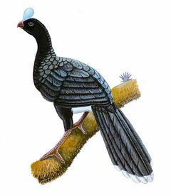
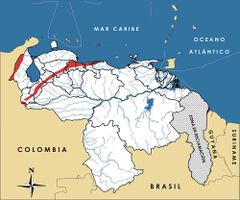

Pauxi pauxi
| Paují copete de piedra | |
|---|---|
|  | |
| Riesgo de extinción | |
 En peligro (UICN) | |
| Clasificación científica | |
| Reino: | Animalia |
| Filo: | Chordata |
| Clase: | Aves |
| Orden: | Galliformes |
| Familia: | Cracidae |
| Género: | Pauxi |
| Especie: | Pauxi pauxi |
| Nombre binomial | |
|
Pauxi pauxi Linnaeus, 1766 | |
| Distribución | |
|
 Mapa de distribución de Pauxi pauxi | |
Contenido
Información de Evaluación
- Categoría y Criterio Regional: En Peligro C2a(ii)
- Fecha de Evaluación Regional: 2015
- Evaluadores: Jesús Morales-Campos y Ariany García-Rawlins
- Categoría y Criterio Global: En Peligro C2a(i)
Justificación
Evaluaciones Previas
1999: En Peligro (EN)
2008: En Peligro (EN)
Información General
Nombres comunes
Paují copete de piedra, paují de piedra, paujil, pajuil, paují de yelmo, Helmeted Curassow, Northern Helmeted Curassow.
Notas taxonómicas
Sinónimos
Descripción
Crácido de gran tamaño que mide entre 85 y 95 cm de longitud total. Se caracteriza por un casco óseo elevado sobre la cabeza, con forma de higo o yelmo cilíndrico de color azuloso grisáceo. La cabeza y el cuello tienen plumas de color negro aterciopelado, mientras que el resto del plumaje dorsal y lateral varía de oscuro a negro brillante con reflejos verdosos o azules. Su vientre es blanco, al igual que el extremo de la cola. Tiene iris pardo y pico rojo. Es de hábitos arborícolas, terrestre y diurno.
Distribución
Pauxi pauxi está restringida a Colombia y Venezuela. En nuestro país se encuentran presentes dos subespecies: Pauxi pauxi gilliardi , endémica de la sierra de Perijá, y Pauxi pauxi pauxi , localizada en varios lugares que van desde la cordillera Oriental de Colombia y sur de Táchira, hasta el norte de Mérida, Lara, Yaracuy y el este de Falcón; también se halla en la Cordillera de la Costa, abarcando Aragua, Carabobo y oeste de Miranda. Entre las poblaciones extintas se incluyen las de Cordillera de la Costa oriental, donde se cuenta con registros de su distribución pasada en el caño Poyanuco del estado Monagas, sin embargo, esta información no ha sido sustentada como se debe. Se estima que su distribución actual ocupa entre 20 y 50% del área original (Phelps Jr. y Meyer de Schauensee 1979, BirdLife International 2000, Hilty 2003). Habita en bosques húmedos con vegetación densa y palmas enanas, normalmente en sectores montañosos y en ocasiones también en zonas bajas, entre 500 y 2200 m de altitud. La especie fue denominada antes Crax pauxi .
- Sistema: Terrestre
- Bioregión:
- Intervalo altitudinal (m): 500-2200
- Endémica: No
Situación
En toda su área de distribución (Colombia y Venezuela) es escasa, con densidades poblacionales menores a una pareja por cada 20-40 ha, lo que equivale de cinco a diez individuos por kilómetro cuadrado (Strahl y Silva 1987, Silva, J. L. 1999). Su población global se calcula en menos de 2500 individuos maduros (BirdLife International 2015). En nuestro país ha sido propuesta como el ave con mayor prioridad de conservación en la actualidad (Rodríguez, J. P. et al. 2004b). En el siglo pasado era abundante en la Cordillera de la Costa. Para 1950 todavía se le consideraba más o menos común, pero en 1954, ya estaba reportada como un ave escasa en Rancho Grande, estado Aragua, con una población estimada entre 25 y 50 ejemplares, y virtualmente extinta en otras áreas adyacentes (Collar et al. 1992). En la actualidad se encuentra extinta en varias localidades y en estado crítico en otras, y sus poblaciones andinas y centrales continúan decreciendo de forma moderada a acelerada (Porras de Guzmán y Arriaga Uzcátegui 1981, Strahl y Silva 1987). La situación de Pauxi pauxi gilliardi es menos conocida, pero se tienen evidencias de amenazas sobre su hábitat y de su cacería. En general, la especie es intolerante a modificaciones de su localidad natural, y es uno de los crácidos que parece enfrentar mayor presión de cacería, en especial la subespecie localizada en la sierra de Perijá. En el ámbito global se le considera En Peligro (BirdLife International 2015), al igual que en la Lista roja de Colombia (Renjifo et al. 2014), y en situación grave que requiere de acciones urgentes.
- EOO (km2): Temporalmente sin información
- AOO (km2): Temporalmente sin información
- Tendencia Poblacional: Decreciendo
Amenazas
Desde antes de la colonia hasta el presente, las causas del sustancial declive de sus poblaciones están relacionadas con su cacería indiscriminada (para ser utilizada como fuente de alimento), y la destrucción y alteración de su hábitat. Estas amenazas también se encuentran presentes en los parques nacionales. Los pueblos indígenas la cazan con fines de subsistencia y además lo hacen con la intención de obtener su «yelmo» para elaborar ornamentos, práctica que también se lleva a cabo en Colombia (Strahl y Silva 1987, Collar et al. 1992).
Conservación
Se encuentra incluida en el Apéndice III de la Convención sobre el comercio internacional de especies amenazadas de fauna y flora silvestres, pero solo en Colombia (Cites 2014). En Venezuela se establece su veda indefinida desde 1970, medida que fue ratificada en 1996, fecha en la que se declaró Especie en Peligro de Extinción (Venezuela 1970, Venezuela 1996a, Venezuela 1996b). En materia de educación ambiental se han realizado algunos esfuerzos que lamentablemente no han tenido continuidad en el tiempo. Varias áreas protegidas de la Cordillera de la Costa y los Andes abarcan gran parte de su distribución, pero no se ha medido la efectividad de estos para la conservación de Pauxi pauxi. Se recomienda continuar y ampliar los programas de educación ambiental y sensibilización; realizar estudios poblacionales, de distribución y magnitud de las amenazas; desarrollar planes de manejo y conservación en áreas protegidas. La cría en cautiverio con fines de repoblamiento en áreas protegidas donde la especie ha disminuido podría ser una alternativa (Rodríguez, J. P. y Rojas-Suárez 2003).
Autorías
Autores originales
Franklin Rojas-Suárez, Christopher J. Sharpe, Miguel Lentino y David Ascanio
Colaboradores
Ilustrador
Denis Torres
Referencias
- BirdLife International (2000). Threatened Birds of the World. The official source for birds on the IUCN Red List. Lynx Edicions. Barcelona, España. 864 pp.
- BirdLife International. (2015). IUCN Red List for birds. Disponible en www.birdlife.org, consultada el 08/07/2015.
- Cites. (2014). Apéndices I, II y III (válidos desde el 14 de septiembre de 2014). Convención sobre el Comercio Internacional de Especies Amenazadas de Fauna y Flora Silvestres (CITES). 47 pp.
- Collar, N. J., Gonzaga, L. P., Krabbe, K., Nieto, A. M., Naranjo, L. G., Parker III, T. A. y Wege, D. C. (1992). Threatened Birds of the Americas. The ICBP/IUCN Red Data Book (3rd ed. part 2). International Council for Bird Preservation. Cambridge. 1150 pp.
- Hilty, S. L. (2003). Birds of Venezuela, second edition. Princeton University Press. Princeton, NJ, USA. 878 pp.
- Phelps Jr., W. H. y Meyer de Schauensee, R. (1979). Una guía de las Aves de Venezuela. Gráficas Armitano. Caracas. 484 pp.
- Porras de Guzmán, J. y Arriaga Uzcátegui, I. (1981). Consideraciones sobre el status de la conservación de las crácidos en Venezuela. Memorias Primer Simposio Internacional de la Familia Cracidae. Universidad Autónoma de México, México.: 117-154.
- Renjifo, L. M., Gómez, M. F., Velásquez-Tibatá, J., Amaya-Villarreal, A. M., Kattan, G. H., Amaya-Espinel, J. D. y Burbano-Girón, J. (2014). Libro rojo de aves de Colombia, Volumen I: bosques húmedos de los Andes y la costa Pacífica. Editorial Pontificia Universidad Javeriana & Instituto Alexander von Humboldt. Bogotá,Colombia. 465 pp.
- Rodríguez, J. P. y Rojas-Suárez, F. (1999). Libro Rojo de la Fauna Venezolana, segunda edición. PROVITA, Fundación Polar. Caracas. 444 pp.
- Rodríguez, J. P. y Rojas-Suárez, F. (2003). Libro Rojo de la Fauna Venezolana (2a ed. reim.). Provita, Fundación Polar. Caracas. 472 pp.
- Rodríguez, J. P., Rojas-Suárez, F. y Sharpe, C. J. (2004b). Setting priorities for the conservation of Venezuela's threatened birds. Oryx 38(4): 373-382.
- Rodríguez, J. P. y Rojas-Suárez, F. (Eds.) (2008). Libro Rojo de la Fauna Venezolana, tercera edición. Provita y Shell Venezuela, S. A. Caracas, Venezuela. 364 pp.
- Rojas-Suárez, F., Sharpe, C. J., Lentino, M. y Ascanio, D. (2015). Paují copete de piedra, Pauxi pauxi. En: J.P. Rodríguez, A. García-Rawlins y F. Rojas-Suárez (eds.) Libro Rojo de la Fauna Venezolana. Cuarta edición. Provita y Fundación Empresas Polar, Caracas, Venezuela. Recuperado de: animalesamenazados.provita.org.ve/content/pauji-copete-de-piedra Mié, 04/04/2018 - 12:57
- Silva, J. L. (1999). Notes about the distribution of Pauxi pauxi and Aburria aburri in Venezuela. Wilson Bulletin 111(4): 564-569.
- Strahl, S. D. y Silva, J. L. (1987). Paují copete de piedra. Boletín Provita 2(1): 3-4.
- Venezuela. (1970). Ley de Protección a la Fauna Silvestre. Gaceta Oficial No. 29289 del 11 de agosto de 1970. Caracas.
- Venezuela. (1996a). Decreto 1485: Animales Vedados para la Caza. Gaceta Oficial No. 36.059 - 7 de octubre de 1996. Caracas.
- Venezuela. (1996b). Decreto 1486: Especies en Peligro de Extinción. Gaceta Oficial No. 36.062- 10 de octubre de 1996. Caracas.